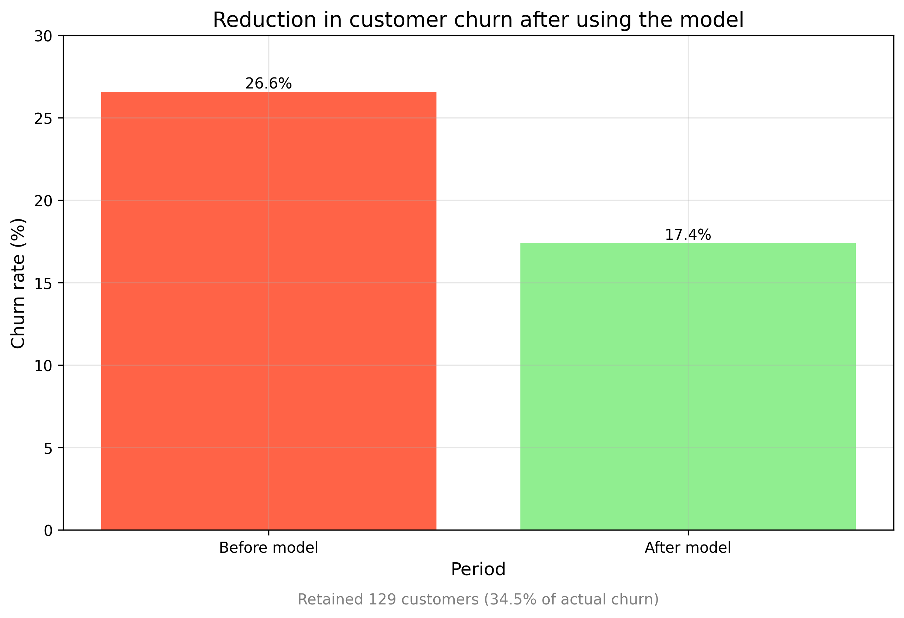

Hello, I'm Ion Linti, an AI engineer dedicated to developing advanced solutions that drive business success.
Problem: Companies incur losses due to flawed purchasing decisions.
Solution: Implemented machine learning algorithms to optimize procurement strategies, resulting in significant cost savings.
View on GitHubProblem: Identifying the underlying causes of customer attrition.
Solution: Developed a robust machine learning model to predict customer churn and pinpoint its primary drivers.
 View on GitHubProblem: Inefficient analysis and utilization of customer reviews.
Solution: Created a machine learning system that detects sentiment keywords in reviews, enabling effective categorization and business insights.
View on GitHubProblem: Generating consistent and creative product descriptions at scale can be challenging.
Solution: Developed a website powered by a large language model (LLM) that automatically generates engaging and persuasive product descriptions.
View on GitHub Test site